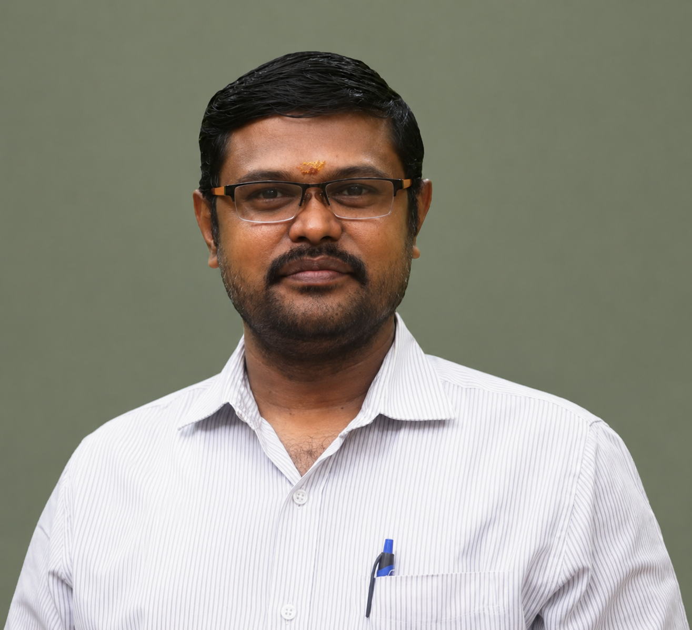

Professor · Mechanical Engineering
Making materials smarter, lighter, and more sustainable.
Dr. I. Siva's research bridges the gap between traditional materials engineering and emerging technologies — combining two decades of hands-on composite science with modern tools including AI/ML modelling, IoT-based structural monitoring, and additive manufacturing. The core thread: natural fibers, engineered to perform.

About
From composites to smart systems — a research journey in two decades
Dr. Siva's research began with a strong foundation in mechanical engineering and grew steadily into advanced work in materials science — particularly natural fiber composites and nanostructured polymer systems. What started as a study of coconut sheath under load has expanded into a broad program that now includes nano-additives, bio-based hybrid systems, and the electromechanical behavior of functional composites.
A CNPq-Brazil funded postdoctoral fellowship at UFRGS, Porto Alegre, was the turning point — anchoring a research direction in hybrid curauá and basalt fiber composites that produced five publications and two workshops, and seeded an international collaborator network now spanning eight countries. Today, that network underpins work that connects traditional experimental characterization with modern computational tools including AI/ML-assisted property prediction and IoT-enabled structural health monitoring.
Read the full research story →Currently
- Active Director, IQAC
- Active Deputy Dean, Accreditations
- Active Editor, Discover Applied Science (Springer Nature)
- Active Supervising 6 PhD candidates
- Active Referee, DST-SERB & National Science Centre Poland
Research focus
Five threads, one continuous research line
From the mechanical behavior of woven natural fibers to the dielectric properties of graphene-reinforced nanocomposites — every thread connects back to making materials perform better, last longer, and cost less.
Core · Materials
Natural fiber & polymer composites
Coconut sheath, curauá, basalt, luffa, sisal, palmyra and water hyacinth fibers — chemically treated, woven, and hybridized into polyester and epoxy matrices. The foundational research thread, running from PhD thesis to the present day across 60+ journal papers.
Behavior · Testing
Tribology, vibration & damping
How composite laminates wear, slide, vibrate, and dissipate energy under real operating conditions. Sliding wear, free-vibration, modal analysis, dynamic mechanical analysis — studied across sandwich, hybrid, and thick composite systems.
Structures · Aerospace
Fiber metal laminates
GLARE and BLARE-type aluminum-composite laminates for aviation and defense: interfacial adhesion, drilling behavior, indentation creep, impact response, and radiation shielding. Collaborative work with IGCAR and ISRO-connected researchers.
Nano · Functional
Nanocomposites & smart materials
Graphene, CNT, MMT nanoclay, and GO-reinforced polymer systems studied for mechanical, dielectric, tribological, and EMI shielding performance — connecting nano-scale structure to macro-scale engineering function.
Emerging · Applied
Additive manufacturing & AI/ML
Translating composite materials research into 3D-printed structures using PLA and natural fiber filaments, alongside AI/ML-assisted property prediction and IoT-based structural health monitoring — the forward edge of the research program.
Sustainability · Circular
Waste-to-product systems
Converting water hyacinth, PET bottles, eggshell, and rice paddy straw into engineered composite products — including a DST-Nidhi funded startup that produced 100 floor tile prototypes and 10 jobs. Research with direct social impact.
Global collaboration
An international research network across eight countries
Built over twenty years through joint publications, student exchanges, bilateral conferences, and shared laboratory access — not just contacts, but active working relationships producing real research outcomes.